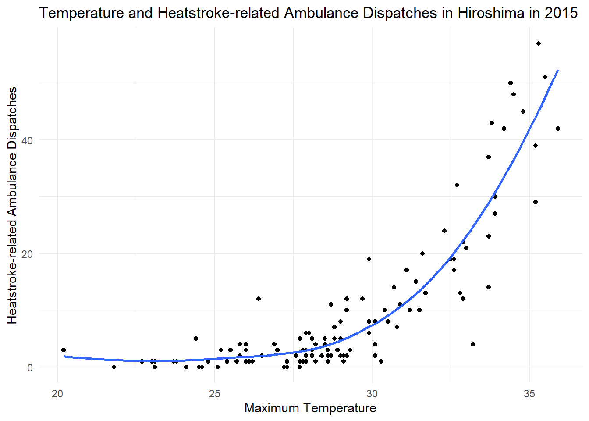
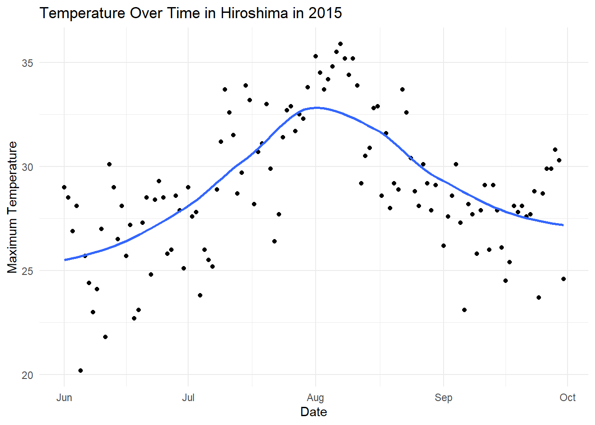
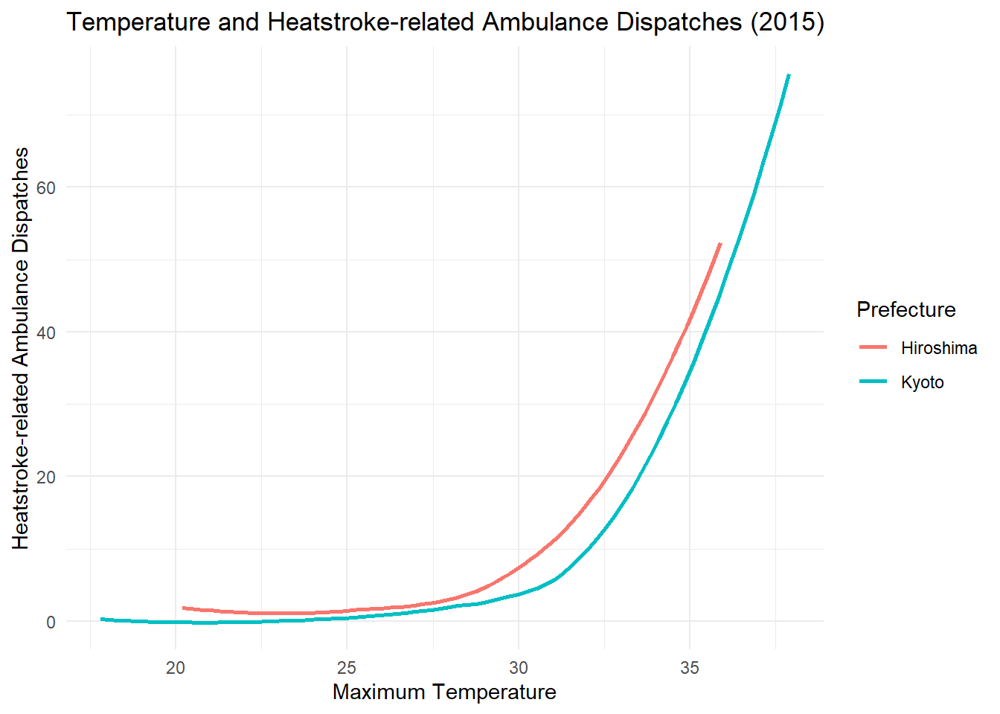
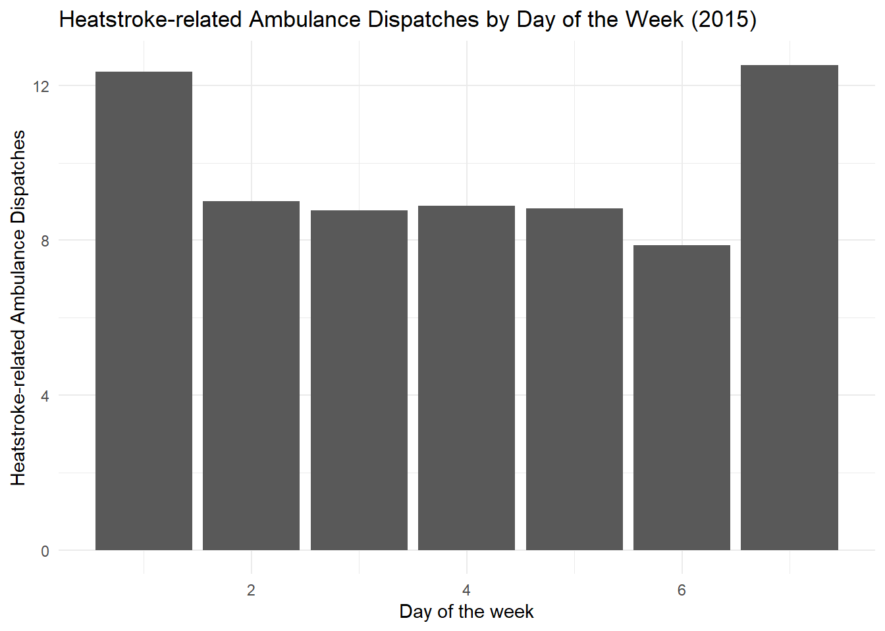
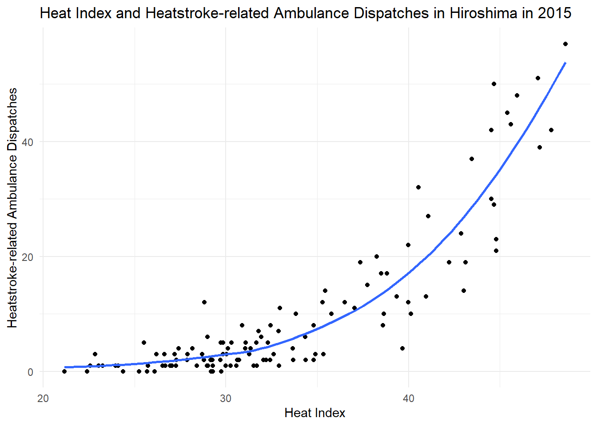

# install.packages("tidyverse")
# install.packages("rio")
library(tidyverse)
library(rio)SCIBIOM303 Workshop 2: Temperature and Heatstroke-related Ambulance Dispatches
Spring 2025
Introduction
In this encounter, we will explore the relationship between temperature and heatstroke-related ambulance dispatches using data from Japan. The data contains daily records of maximum temperature and relative humidity across all 47 prefectures from 2015 to 2019.
Loading packages
We will start by loading the tidyverse and rio packages. Ensure these packages are installed before running the code.
Importing Data
We will import two data sets: one for heatstroke-related ambulance dispatches (HSAD) and one for temperature data.
hsad <- import("https://github.com/ucrdatacenter/projects/raw/refs/heads/main/SCIBIOM303/2025h1/data/HSAD.csv")
temp <- import("https://github.com/ucrdatacenter/projects/raw/refs/heads/main/SCIBIOM303/2025h1/data/temperature.csv")Merging the Data
To analyze the relationship between temperature and heatstroke-related ambulance dispatches, we will merge the two data sets using the left_join() function. We will join them on the columns Date and Prefecture. Next, we convert the Date column into a date format.
merged <- left_join(temp, hsad, by = c("Date", "Prefecture")) |>
mutate(Date = dmy(Date)) Analyzing Data for a Specific Prefecture and Year
We will focus on Hiroshima in 2015 to study the relationship between daily maximum temperature and heatstroke-related ambulance dispatches.
hiroshima_2015 <- merged |>
filter(Prefecture == "Hiroshima") |>
filter(Year == 2015)Visualizing the Data
We will create a scatter plot to visualize the relationship between maximum temperature and heatstroke-related ambulance dispatches. A trend line is added to show the overall pattern.
ggplot(hiroshima_2015, aes(x = Tempmax, y = HSAD)) +
geom_point() +
geom_smooth(se = FALSE) +
labs(title = "Temperature and Heatstroke-related Ambulance Dispatches in Hiroshima in 2015",
x = "Maximum Temperature",
y = "Heatstroke-related Ambulance Dispatches") +
theme_minimal()
The number of heatstroke-related ambulance dispatches increases significantly when the temperature exceeds 30°C. This trend aligns with what we expect because higher temperatures can cause a rapid rise in core body temperature, leading to heatstroke (source).
Trends Over Time
We will create another plot to show how maximum temperature changes over time in Hiroshima in 2015.
ggplot(hiroshima_2015, aes(x = Date, y = Tempmax)) +
geom_point() +
geom_smooth(se = FALSE) +
labs(title = "Temperature Over Time in Hiroshima in 2015",
x = "Date",
y = "Maximum Temperature") +
theme_minimal()
The temperature rises in June, peaks in August (above 35°C), and then decreases in October. This seasonal pattern is typical for Hiroshima (source).
Linear Regression Analysis
To quantify the relationship between temperature and heatstroke-related ambulance dispatches, we perform a linear regression analysis.
lr <- lm(HSAD ~ Tempmax, data = hiroshima_2015)
summary(lr)
Call:
lm(formula = HSAD ~ Tempmax, data = hiroshima_2015)
Residuals:
Min 1Q Median 3Q Max
-18.947 -5.163 -1.816 3.845 27.511
Coefficients:
Estimate Std. Error t value Pr(>|t|)
(Intercept) -80.4723 6.5532 -12.28 <2e-16 ***
Tempmax 3.1151 0.2248 13.86 <2e-16 ***
---
Signif. codes: 0 '***' 0.001 '**' 0.01 '*' 0.05 '.' 0.1 ' ' 1
Residual standard error: 8.083 on 118 degrees of freedom
Multiple R-squared: 0.6193, Adjusted R-squared: 0.6161
F-statistic: 192 on 1 and 118 DF, p-value: < 2.2e-16The R-squared value of 0.6193 indicates that about 61.93% of the variability in ambulance dispatches can be explained by the maximum temperature. This suggests a strong positive relationship between HSAD and temperature.
Comparing Two Prefectures
Next, we will compare the relationship between temperature and ambulance dispatches in Hiroshima and Kyoto in 2015 using a line graph.
merged |>
filter(Prefecture == "Kyoto"| Prefecture == "Hiroshima") |>
filter(Year == 2015) |>
ggplot() +
geom_smooth(aes(x = Tempmax, y = HSAD, color = Prefecture), se = FALSE) +
labs(title = "Temperature and Heatstroke-related Ambulance Dispatches (2015)",
x = "Maximum Temperature",
y = "Heatstroke-related Ambulance Dispatches") +
theme_minimal()
Both prefectures show similar trends, with the number of dispatches increasing as temperature rises (source).
Dispatches by Day of the Week
We can also analyze the average number of dispatches by the day of the week.
hiroshima_2015 |>
group_by(Dow) |>
summarize(HSAD = mean(HSAD)) |>
ggplot(aes(x = Dow, y = HSAD)) +
geom_col() +
labs(title = "Heatstroke-related Ambulance Dispatches by Day of the Week (2015)",
x = "Day of the week",
y = "Heatstroke-related Ambulance Dispatches") +
theme_minimal()
There are more dispatches on days 1 and 7, which correspond to Sunday and Saturday, respectively. This is expected, as heatstroke cases are more frequent on weekends, especially on Sundays when people engage in outdoor or sporting activities (source).
Creating the Heat Index
The heat index, also known as the “feels-like” temperature, is calculated using temperature and humidity to reflect how hot it feels to the human body. This formula was developed by Robert G. Steadman in 1979 and later adapted by the National Weather Service. It accounts for the reduced ability of the body to cool itself through sweating in high-humidity conditions, making it a crucial indicator for heat-related health risks (source).
We first convert the temperature to Fahrenheit to calculate the heat index, then convert it back to Celsius.
hiroshima_lr_data <- hiroshima_2015 %>%
mutate(
Temp_F = Tempmax * 9 / 5 + 32,
Heat_Index_F = -42.379 +
2.04901523 * Temp_F +
10.14333127 * Rhumave -
0.22475541 * Temp_F * Rhumave -
0.00683783 * Temp_F^2 -
0.05481717 * Rhumave^2 +
0.00122874 * Temp_F^2 * Rhumave +
0.00085282 * Temp_F * Rhumave^2 -
0.00000199 * Temp_F^2 * Rhumave^2,
Heat_Index_C = (Heat_Index_F - 32) * 5 / 9)Visualizing Heat Index and Ambulance Dispatches
We will create a plot to show the relationship between the heat index and ambulance dispatches.
ggplot(hiroshima_lr_data, aes(x = Heat_Index_C, y = HSAD)) +
geom_point() +
geom_smooth(se = FALSE) +
labs(title = "Heat Index and Heatstroke-related Ambulance Dispatches in Hiroshima in 2015",
x = "Heat Index",
y = "Heatstroke-related Ambulance Dispatches") +
theme_minimal()
The number of dispatches rises sharply after the heat index exceeds 30°C, confirming that the heat index is a strong predictor of heat-related emergencies (source).
Linear Regression with Heat Index
Finally, we perform a linear regression analysis using the heat index to predict ambulance dispatches.
lr2 <- lm(HSAD ~ Heat_Index_C, data = hiroshima_lr_data)
summary(lr2)
Call:
lm(formula = HSAD ~ Heat_Index_C, data = hiroshima_lr_data)
Residuals:
Min 1Q Median 3Q Max
-16.4816 -4.0284 -0.9406 3.2193 21.7201
Coefficients:
Estimate Std. Error t value Pr(>|t|)
(Intercept) -45.3048 3.2060 -14.13 <2e-16 ***
Heat_Index_C 1.6585 0.0947 17.51 <2e-16 ***
---
Signif. codes: 0 '***' 0.001 '**' 0.01 '*' 0.05 '.' 0.1 ' ' 1
Residual standard error: 6.905 on 118 degrees of freedom
Multiple R-squared: 0.7222, Adjusted R-squared: 0.7198
F-statistic: 306.8 on 1 and 118 DF, p-value: < 2.2e-16The R-squared value is 0.7222, meaning that 72.22% of the variability in dispatches can be explained by the heat index. This suggests the heat index is an even stronger predictor than temperature alone.